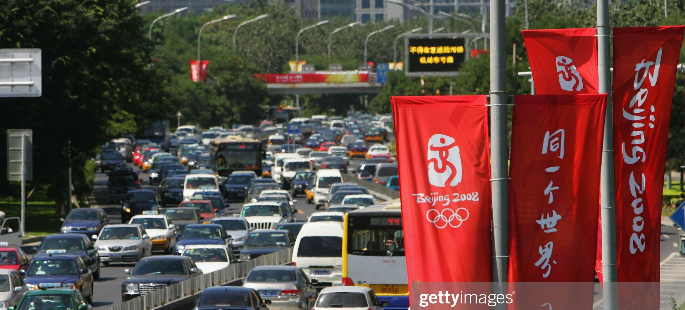
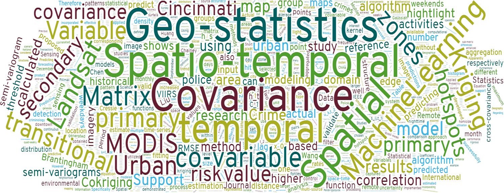
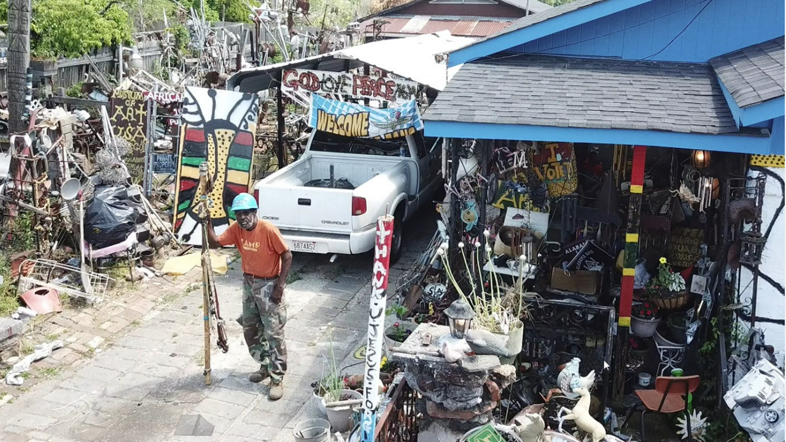
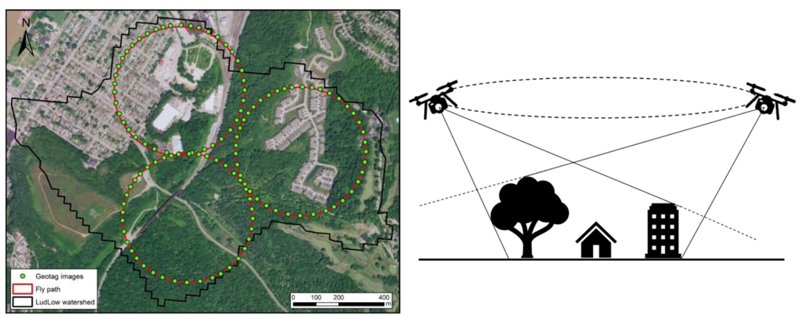

GeoFly Lab studies how cities work through their spatial data. We quantify the transportation impact on urban heat, predict where crime is likely to occur, and develop geostatistical methods for combining observations from different sensors into a single, reliable picture. The same methods support our work in cultural heritage documentation and watershed management.
1. Urban heat and transportation
We use thermal remote sensing and the urban heat budget to isolate and quantify the transportation impact on urban heat and climate change. Separating the contribution of traffic from other sources of warming makes it possible to estimate how changes in transportation policy and road capacity affect the thermal environment of a city.

2. Crime prediction and spatial statistics
We develop a novel geostatistical technique to integrate historical crime data and urban transitional zones identified from VIIRS nightlight imagery for more accurate crime prediction. Nightlight imagery marks where the character of a neighborhood is changing, and adding that signal to the historical record improves predictions beyond what past crime locations alone can provide.

3. ST-Cokriging and image fusion
We develop a spatio-temporal Cokriging method for assimilating multi-sensor remote sensing data, optimally determining parameters by accounting for spatio-temporal covariance, filling data gaps, and providing quantitative uncertainty estimates. The approach lets coarse but frequent satellite imagery be combined with fine but infrequent observations, and it reports how much confidence to place in each fused value.
4. Mapping Joe Minter’s African American Village
Advanced technology documents and preserves artist Joe Minter’s art installation in Birmingham, Alabama, creating a digital rendering accessible to a wider audience. Drone survey produces a record of a site that is difficult to photograph from the ground, and makes it possible to revisit the installation as it changes over time.

5. Drones for hydrological BMP management
High-resolution drone imagery provides better surface and elevation data for Best Management Practices analysis, improving watershed outlines and cost-effectiveness estimates under future climate scenarios. More accurate terrain means stormwater features are placed where they will actually intercept runoff.
